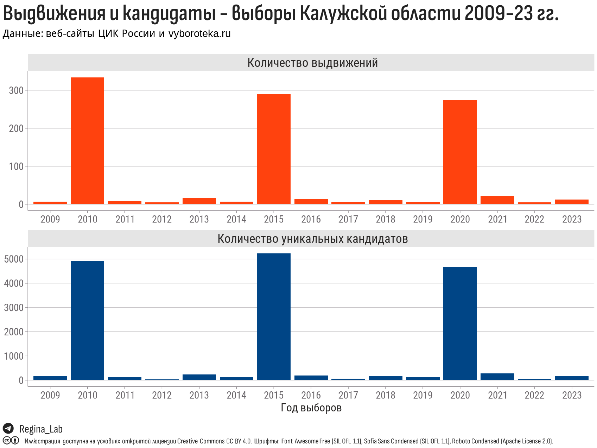
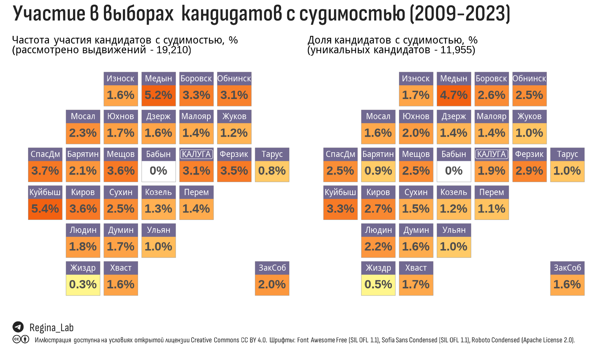
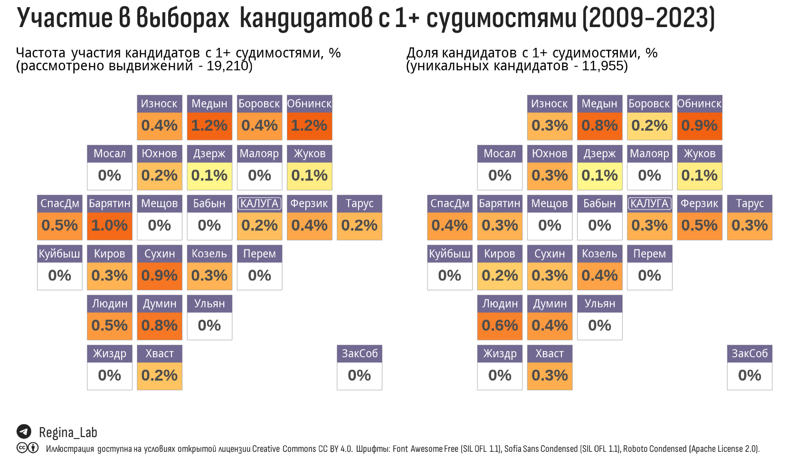

Проанализированы данные о кандидатах в депутаты представительных органов муниципальных образований и Законодательного собрания Калужской области в период с 2009 по 2023 год. Агрегированные сведения об участии кандидатов с судимостью представлены в виде плиточных карт.
В прошлой публикации мы показали как строить плиточную карту Калужской области, самое время применить её для отображения реальных данных. В качестве упражнения решили проанализировать сведения о выборах Калужской области.
Определимся с терминами, которые будем использовать:
выдвижение – участие кандидата в выборах в конкретный орган в отдельный год. Некоторые кандидаты могут иметь несколько выдвижений – в один и тот же орган представительной власти в разные годы, или в разные органы в один год, а иногда и то, и другое.
представительные органы - этим терминов будем обозначать всякого рода думы и собрания муниципальных образований, которые в соответствии с определением ст.130-133 Конституции РФ и положениями Федерального закона от 06.10.2003 N 131-ФЗ (ред. от 15.05.2024) “Об общих принципах организации местного самоуправления в Российской Федерации” формируются путем выборов, а также Законодательное собрание Калужской области, которые являются представительным и единственным законодательным органом государственной власти Калужской области.
Мы проанализировали сведения о 19210 выдвижениях, захватив 3 волны выборов – 2010, 2015, 2020, а также всё то, что происходило между ними (повторные и дополнительные выборы).

Сведения о кандидатах на сайте ЦИК России приведены в нестандартных форматах (что дали, то и есть). Поэтому нам пришлось потратить некоторое время на проверку и унификацию данных:
а) если в сведениях о судимости присутствовали несколько дат осуждения или погашения судимости, мы прикладывали максимум усилий, чтобы разделить статьи для каждого осуждения и выделить эти даты.
б) если в сведениях о судимости присутсвовали несколько статей с указанием частей или пунктов, мы мы прикладывали максимум усилий, чтобы разделить статьи и унифицировать статьи.
Мы не занимались сбором иных сведений о кандидатах, их преступлениях и т.д.
Сведения о выдвижениях в представительные органы сельских и городских поселений агрегированы до муниципальных районов (всего – 24), сведения о выдвижениях в Городское Собрание города Обнинск, Городскую Думу Калуги и Законодательное собрание Калужской области показаны как есть. Таким образом, агрегированные сведения представлены для 27 субъектах.
В таблице ниже для каждого из 27 субъектов оказано количество выдвижений (Выдв) и уникальных кандидатов (Канд), в том числе с судимостью (Суд) и с более чем 1 судимостью (Суд+).
Эти же цифры, но теперь в виде плиточной карты.

Аналогичную карту построим для кандидатов с несколькими судимостями.

Кандидат, выдвигаясь на выборах, обязан указывать информацию о своей судимости, даже если она снята или погашена. Сведения об этом должны будут обязательно указываться в бюллетене и публиковаться на информационных стендах, где вывешивается информация о кандидате.Сведения о судимости кандидатов будут доступны избирателям на выборах. РИА Новости. 19.02.2014
Кандидат вправе не предоставлять данные только в случае декриминализации статьи, по которой он был осужден. КС РФ: при регистрации на выборах необходимо сообщать о судимости даже при амнистировании. ТАСС. 05.04.2016
Сокрытие данных о судимости в последние годы стало достаточно частой причиной для отказа в регистрации: по данным ЦИК, в 2014 г. органы МВД выявили 240 кандидатов от 28 партий, представивших недостоверные сведения о судимости. Проблемы были у всех партий, подтверждает руководитель юридической службы КПРФ Вадим Соловьев: требование указывать судимость не вызывает возражений, конфликты возникали из-за отсутствия четких и однозначных правил. “Избиратели вправе знать о судимости кандидатов даже в случае амнистии”. Газета “Ведомости”. 06.04.2016
Законодатель обязал кандидатов в своих заявлениях о согласии баллотироваться указывать сведения о когда-либо полученных судимостях при наличии , – сказала Председатель ЦИК России. – А если судимость снята или погашена, необходимо представить сведения о дате снятия или погашения судимости. За три с половиной года действия этой нормы, – продолжила Элла Памфилова, – около 250 кандидатов не были допущены на выборы разных уровней, так как на день голосования не прошло 10 или 15 лет с момента снятия или погашения тяжких или особо тяжких судимостей соответственно. Или имелись судебные решения по их экстремистской деятельности». “Разъяснение ЦИК России о действующих нормах по ограничению права быть избранными лиц, имевших судимость”. Сайт ЦИК России. 15.11.2017
Около 2,2% решивших баллотироваться 9 сентября в региональные и муниципальные депутаты имеют судимость. Каждый 50-й: сколько претендентов в депутаты заявили о своей судимости. РБК. 04.09.2018
В Калужской области доля кандидатов с судимостью в выборах 2009-2023 гг. – 1.43% (в целом, как по стране).
В таблице представлена статистика по статьям УК. Статьи разных кодексов (РФ, СССР и некольких других стран) объединены в столбце “Статьи” и там, где это возможно, отнесены к разделам и главам действующего УК РФ.
Самые частые статьи – Кража и Хулиганство, но спектр впечатляет – встречаются грабёж, побои, умышленное причинение тяжкого вреда здоровью, изнасилование, психологическое принуждение… именно по этой причине стоит ходить на все выборы и смотреть за что так предлагают голосовать.
Нравятся наши материалы? 👉 ТГ-канал Regina Lab
Выборы Калужской области (Часть 1. Кандидаты с судимостью). // Блог Regina Lab. - 2024. - URL: https://reginaobninsklab.github.io/posts/kaluga-elections-part1-sudimost/. - Дата публикации: 30 июня 2024 г.
Если не указано иное, то статья целиком и составляющие её текст, иллюстрации и данные могут использоваться на условиях публичной лицензии Creative Commons CC BY 4.0 Deed Attribution 4.0 International.
См. соответствующий раздел на странице “О проекте”.
Allaire J, Xie Y, Dervieux C, McPherson J, Luraschi J, Ushey K, Atkins A, Wickham H, Cheng J, Chang W, Iannone R (2023). rmarkdown: Dynamic Documents for R. R package version 2.22, https://github.com/rstudio/rmarkdown.
Ooms J (2023). magick: Advanced Graphics and Image-Processing in R. R package version 2.8.2, https://CRAN.R-project.org/package=magick.
Pebesma E (2018). “Simple Features for R: Standardized Support for Spatial Vector Data.” The R Journal, 10(1), 439-446. doi: 10.32614/RJ-2018-009 (URL: https://doi.org/10.32614/RJ-2018-009), <URL: https://doi.org/10.32614/RJ-2018-009>.
Pedersen T (2024). patchwork: The Composer of Plots. R package version 1.2.0, https://CRAN.R-project.org/package=patchwork.
Qiu Y, details. aotifSfAf (2022). sysfonts: Loading Fonts into R. R package version 0.8.8, https://CRAN.R-project.org/package=sysfonts.
Qiu Y, details. aotisSfAf (2023). showtext: Using Fonts More Easily in R Graphs. R package version 0.9-6, https://CRAN.R-project.org/package=showtext.
Wickham H (2022). stringr: Simple, Consistent Wrappers for Common String Operations. R package version 1.5.0, https://CRAN.R-project.org/package=stringr.
Wickham H (2016). ggplot2: Elegant Graphics for Data Analysis. Springer-Verlag New York. ISBN 978-3-319-24277-4, https://ggplot2.tidyverse.org.
Wickham H, François R, Henry L, Müller K, Vaughan D (2023). dplyr: A Grammar of Data Manipulation. R package version 1.1.2, https://CRAN.R-project.org/package=dplyr.
Wickham H, Henry L (2023). purrr: Functional Programming Tools. R package version 1.0.1, https://CRAN.R-project.org/package=purrr.
Wickham H, Hester J, Bryan J (2023). readr: Read Rectangular Text Data. R package version 2.1.4, https://CRAN.R-project.org/package=readr.
Wickham H, Seidel D (2022). scales: Scale Functions for Visualization. R package version 1.2.1, https://CRAN.R-project.org/package=scales.
Wickham H, Vaughan D, Girlich M (2023). tidyr: Tidy Messy Data. R package version 1.3.0, https://CRAN.R-project.org/package=tidyr.
Wilke C, Wiernik B (2022). ggtext: Improved Text Rendering Support for ‘ggplot2’. R package version 0.1.2, https://CRAN.R-project.org/package=ggtext.
Xie Y (2023). knitr: A General-Purpose Package for Dynamic Report Generation in R. R package version 1.43, https://yihui.org/knitr/.
Xie Y (2015). Dynamic Documents with R and knitr, 2nd edition. Chapman and Hall/CRC, Boca Raton, Florida. ISBN 978-1498716963, https://yihui.org/knitr/.
Xie Y (2014). “knitr: A Comprehensive Tool for Reproducible Research in R.” In Stodden V, Leisch F, Peng RD (eds.), Implementing Reproducible Computational Research. Chapman and Hall/CRC. ISBN 978-1466561595.
Xie Y, Allaire J, Grolemund G (2018). R Markdown: The Definitive Guide. Chapman and Hall/CRC, Boca Raton, Florida. ISBN 9781138359338, https://bookdown.org/yihui/rmarkdown.
Xie Y, Dervieux C, Riederer E (2020). R Markdown Cookbook. Chapman and Hall/CRC, Boca Raton, Florida. ISBN 9780367563837, https://bookdown.org/yihui/rmarkdown-cookbook.
Yu G (2023). ggimage: Use Image in ‘ggplot2’. R package version 0.3.3, https://CRAN.R-project.org/package=ggimage.